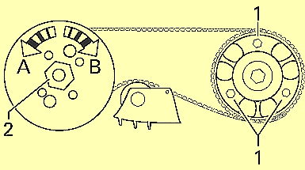

Preconditions for the test:
Engine idling.
No faults stored.
Engine temperature above 80 °C.
All electrical loads switched off.
Gear selector set to P/N.
Note:
For checking the injection control and adjusting the injection timing.
The basic setting must always be done after the injection pump drive belt has been changed or when the injection pump bolts have been undone.
Procedure:
Choose the function: Injection timing.
The injection timing is regulated to the max position for early injection.
Read the injection timing. Prescribed value 13-17 ° before TDC. If the prescribed value is not reached (more than 13° before TDC) regulation is prevented.
After about 10 seconds the injection time must be regulated to late injection.
Read the injection timing. Prescribed value 0.5-3.5 ° after TDC. If the prescribed value is not reached, adjust the injection timing.
Adjustment:
Switch off the engine and the ignition.
Remove the belt guards.
Check that the injection pump drive belt tension is correct. The markings must coincide.
If the markings do not coincide: - Tension the drive belts.
If the markings coincide:
- Slacken the locking bolts on the camshaft gear (see illustration, -1-). Turn the injection pump (see illustration, -2-). - Direction A for later injection. - Direction B for earlier injection. - Note: Do not slacken the injection pump locknut (see illustration, -2-).
Tighten the camshaft gear locking bolts. Tightening torque 20 Nm.
Check the injection timing.
